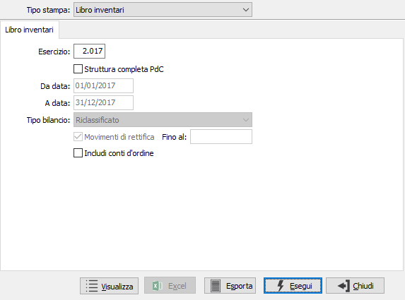
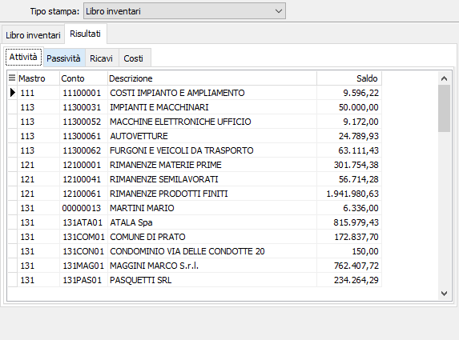

Bilancio a sezioni divise
Accedendo al programma appare la seguente finestra video:

ESERCIZIO: indica l'esercizio per cui effettuare la stampa.
STRUTTURA COMPLETA PDC: consente di visualizzare tutta la struttura del piano dei conti (casella con segno di spunta).
INCLUDI CONTI D'ORDINE: Valori possibili:
vuoto = non include nell'elaborazione i conti d'ordine;
spunta = include nell'elaborazione i conti d'ordine.
La pressione del bottone Esegui determina l’esecuzione della stampa; premendo Esporta viene richiesto un nome file ed esportato il bilancio su file di testo; premendo il pulsante Visualizza viene mostrata la seguente pagina all'interno della finestra:

La pagina contiene altre pagine, una per ogni tipologia di voce primaria del bilancio (Attivo, Passivo, ecc.) ed in ogni pagina sono presenti i conti ed i relativi valori; ogni griglia di ogni pagina può essere esportata tramite il menù associato al tasto destro del mouse; inoltre con il doppio clic del mouse su un qualsiasi rigo della griglia delle varie pagine si accede all'analisi sottoconto del conto presente sul rigo.